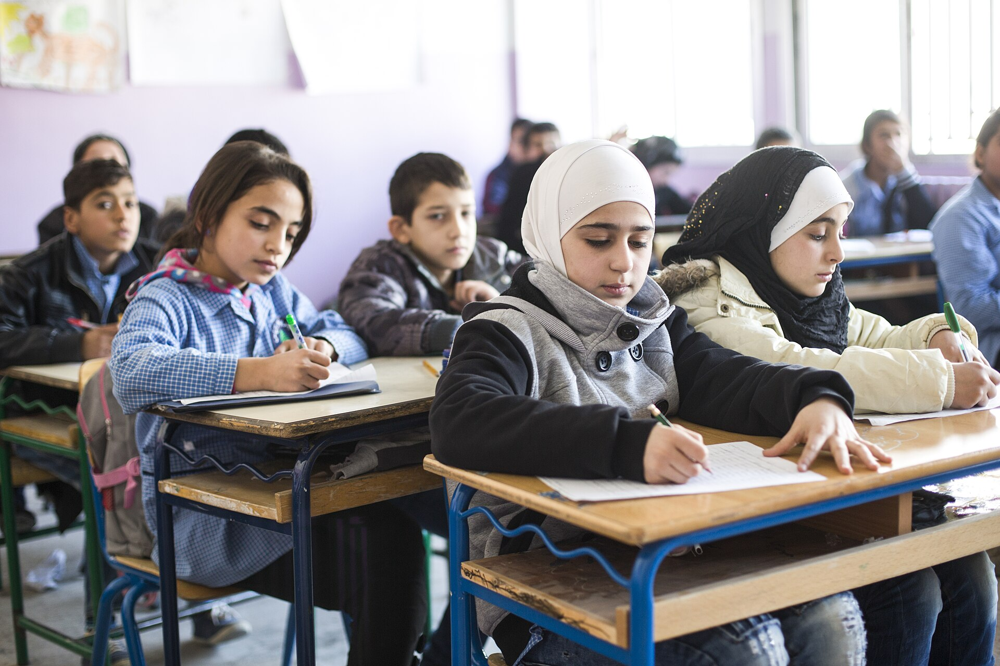

People · Human Rights
The villages that changed the conversation
How listening instead of arriving with answers helped turn conversations in Senegal into a movement for community-led change.

Proof of Hope
How asking a different question became one of the most remarkable human rights movements in recent history.
Read the story
Series
Carefully researched stories of kindness, conservation, discovery and resilience.
People · Human Rights
How listening instead of arriving with answers helped turn conversations in Senegal into a movement for community-led change.

People · Education
How one teenager's answer to an impossible question grew into a home, a school, and a community that now cares for its own.

People · Education
How a question raised by refugee teenagers in a Beirut camp became a qualification designed for interrupted lives.
Series
Science, history and the gaps between what we assumed and what is actually true.

Psychology · Perception
On déjà vu, jamais vu, and the curious ways familiarity shapes what we think we know.

Psychology · Perception
What happens when the mind learns to tune out the world around it, from the hum of a refrigerator to suffering, kindness and the things familiarity teaches us not to see.

Neuroscience · Perception
You never experience the machinery that constructs reality. You experience its conclusion.
Explore